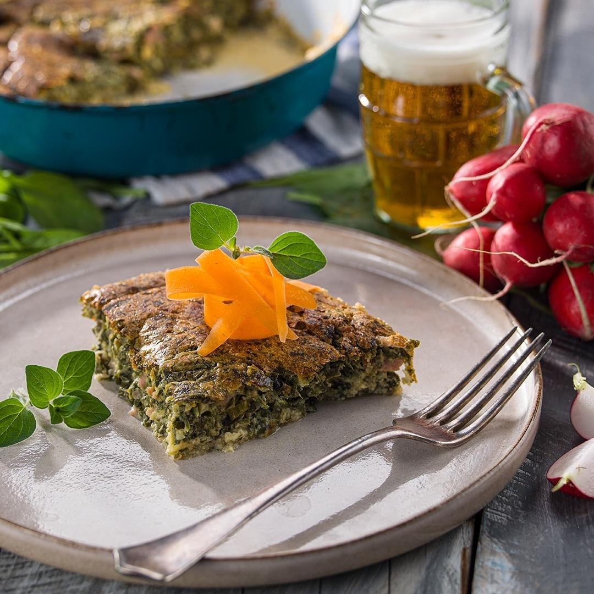

Špenátový nákyp podľa @komora_coopjednota — Normy Jedál
Mäkkučký špenátový nákyp rozhodne za svojou ovocnou verziou nezaostáva. Presvedčte o tom svoj jazýček a vyskúšajte ho podľa nášho receptu na bit.ly/spenatovy-nakyp. 💚⠀
#komoragazdin #recept #spenat #zelenina #nakyp #spenatovynakyp #obed #tipnaobed #pecenie #peceniemabavi #peceniejeradost